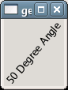

Returns the angle of rotation in degrees (0-359).
Example 78. Getting and Setting an Angle for GtkLabel
<?php
// Create a window to hold the label.
$window = new GtkWindow();
// Set up the window to close cleanly.
$window->connect_simple('destroy', array('Gtk', 'main_quit'));
// Create a label
$label = new GtkLabel('Degree Angle');
// Set the angle to 50 degrees.
$label->set_angle(50);
// Now update the label with the current angle.
$label->set_text($label->get_angle() . ' ' . $label->get_text());
// Add the label to the window.
$window->add($label);
// Show the window and start the main loop.
$window->show_all();
Gtk::main();
?> |

See also: set_angle()